To continue gaining familiarity with the R statistical framework by using RStudio to:
Calculate mean and standard deviation
Calculate median, 25th and 75th percentiles, and interquartile range
Use functions in ggplot2 (part of tidyverse) to create boxplots, bar charts, scatterplots, and line graphs.
Packages
In this problem set, we will use more functions associated with the tidyverse package, including a subset of this package - ggplot2 - which is used for creating publication-quality graphs.
First, we need to load this package. Remember - we installed this in a previous module, so we should not need to install in again and should be able to simply load it.
library(tidyverse)
── Attaching core tidyverse packages ──────────────────────── tidyverse 2.0.0 ──
✔ dplyr 1.1.4 ✔ readr 2.1.5
✔ forcats 1.0.0 ✔ stringr 1.5.1
✔ ggplot2 3.5.1 ✔ tibble 3.2.1
✔ lubridate 1.9.4 ✔ tidyr 1.3.1
✔ purrr 1.0.2
── Conflicts ────────────────────────────────────────── tidyverse_conflicts() ──
✖ dplyr::filter() masks stats::filter()
✖ dplyr::lag() masks stats::lag()
ℹ Use the conflicted package (<http://conflicted.r-lib.org/>) to force all conflicts to become errors
Datasets:
We will be working with two real-world datasets this week that are pulled directly from Zenodo, the European Union’s open-source repository for scientific data. We will be using the read_csv command from tidyverse to read files directly from the internet into R.
Dataset 1
Our first dataset looks at the energetic costs associated with nesting in an Arctic seabird, the Common Eider Somateria mollissima[@hoyvik_hilde_data_2017]. These data represent the open-access permanent archive of a publication based on these data [@hoyvik_hilde_mind_2016]. The authors constructed artificial shelters around some nests to understand how it affected the physical condition of incubating female eiders. Note that I do a few steps below to (1) reduce the size of the data file and (2) rename columns to be more intuitive. All of these steps involve the tidyverse steps we’ve discussed before.
Rows: 87 Columns: 25
── Column specification ────────────────────────────────────────────────────────
Delimiter: ","
chr (4): Nest ID, Shelter added (Y/N), COMMENTS, Shelter class
dbl (19): Year, MeanT, MeanW, Winddir, MeanH, Date capture, Date recapture,...
time (2): Time deployed, Time retrieved
ℹ Use `spec()` to retrieve the full column specification for this data.
ℹ Specify the column types or set `show_col_types = FALSE` to quiet this message.
Dataset 2
Our second dataset relates to the effects of nitrogen on the growth of Scots Pine and Norway Spruce [@jetsonen_volume_2025]. This is a dataset related to a publication on these trees and the volume they add that came out a year prior, and represents another open-access dataset [@jetsonen_effects_2024]. Like dataset 1, we are going to select specific columns and rename them for this assignment.
Rows: 165 Columns: 16
── Column specification ────────────────────────────────────────────────────────
Delimiter: ","
chr (3): tree, location, site_type
dbl (13): article_id, GS, GM, GN, Tsum, Pa, FN, v_incr_annual_compare, SF, G...
ℹ Use `spec()` to retrieve the full column specification for this data.
ℹ Specify the column types or set `show_col_types = FALSE` to quiet this message.
Procedure:
Watch Module 3: Describing and Visualizing Data in R for a walk-through of these initial procedures.
Open a new R script or Rmarkdown script in the source pane by clicking on the File menu > New File > R Script or Rmarkdown.
If necessary, you can clear the environment and plots panes from R’s memory by type rm(list=ls()) in the code pane and then hitting CTRL + L to clear the coding pane’s text. Alternatively, this can be accomplished by clicking the broom icon at the top of both of these panes and clear the console by clicking on Editmenu > Clear Console.
Set your working directory and import both datasets. Review Modules 1 and 2 procedures, if necessary, for a reminder of how to complete these tasks.
For these procedures and video, dataset 1 was imported as a dataframe object named bird_data, and dataset 2 as a dataframe object named tree_data.
Descriptive statistics refers to simple calculations that summarize or describe a given variable. Measures of central tendency commonly used are the mean (i.e., average) and median (i.e, 50th percentile). Corresponding measures of spread are standard deviation (accompanying the mean) and interquartile range or 25th and 75th percentiles (accompanying the median).
Section A. Calculate mean and standard deviation
Create a new column for the difference in mass as a percent of the birds’ initial mass using the command mutate.
Calculate the mean and standard deviation of the Percent_mass_change variable separately for whether the nest was or was not sheltered (Shelter_added; Y or N). First, we will calculate these “by hand” using the following equations:
In order to do this, we will need to write a function. A function is a specific R command that creates a pipeline for some sort of input data.
In writing these functions, it’s important to know that we can perform subtraction, multiplication, and other mathematical functions across multiple values as once. For example, if we want to know what \(1\) through \(10\) all \(-5.5\) are equal, we can do the following:
# denote multiple numbers with :x <-1:10x -5.5
[1] -4.5 -3.5 -2.5 -1.5 -0.5 0.5 1.5 2.5 3.5 4.5
We can write our own functions in R that will perform these functions as follows:
our_mean <-function(x){# get sum of input sum_x <-sum(x)# calculate length of input n <-length(x)# calculate mean xbar <- sum_x/n# return mean to console# necessary for saving outside functionreturn(xbar)}our_sd <-function(x){# need to calculate mean first!# copied from above# get sum of input sum_x <-sum(x)# calculate length of input n <-length(x)# calculate mean xbar <- sum_x/n# calculate deviants deviants <- x - xbar deviants_sq <- deviants^2 our_variance <-sum(deviants_sq)/n our_sd <-sqrt(our_variance)# return answerreturn(our_sd)}
Remember, we can use select to get a specific set of data from a dataframe in R. I will calculate these metrics for one set of variables here:
# filter datano_shelter_change <- bird_data %>%# get non-sheltered birdsfilter(Shelter_added =="N")# extract data of interest ONLYno_shelter_mass_change <- no_shelter_change$Percent_mass_change# view first few valueshead(no_shelter_mass_change)
Now that we have our data subsetted, we can calculate “by hand”.
our_mean(no_shelter_mass_change)
[1] -0.2068213
our_sd(no_shelter_mass_change)
[1] 0.02416277
Now, calculate the following for individuals with shelters. Your answers should be as follows (I have hidden my subsetting code):
our_mean(shelter_mass_change)
[1] -0.1957889
our_sd(shelter_mass_change)
[1] 0.0223379
Now, let’s compare our answers to those calculated by R. These values may differ slightly based on rounding in R, but should be very close. Remember - you can use the same objects that we used before if they are still stored in your memory!
mean(no_shelter_mass_change)
[1] -0.2068213
sd(no_shelter_mass_change)
[1] 0.02435685
Now, we want to run pastecs command stat.desc on part of the dataframe (for example, the mass change with a shelter).
# use library to load package# this may not be shown in future modules!library(pastecs)
Attaching package: 'pastecs'
The following objects are masked from 'package:dplyr':
first, last
The following object is masked from 'package:tidyr':
extract
# stat.desc, rounded to 2 decimalsstat.desc(shelter_mass_change) %>%round(2)
nbr.val nbr.null nbr.na min max range
24.00 0.00 0.00 -0.24 -0.13 0.10
sum median mean SE.mean CI.mean.0.95 var
-4.70 -0.19 -0.20 0.00 0.01 0.00
std.dev coef.var
0.02 -0.12
Run the command on the mass data for birds with no shelter as well.
Compare the weight data for birds with a shelter and without a shelter. What similarities do you see? What differences do you see?
Section B. Calculate the median (50th), 25th, and 75th percentiles and interquartile range (IQR)
Quantiles are a way of looking at the response value at which a given percentage of observations are captured. The most common quantiles are the 25th, 50th, and 75th percentiles. This specific set of quantiles are also called quartiles: 1st quartile (25th percentile), median (50th percentile), and 3rd quartile (75th percentile). The interquartile range (IQR) measures spread representing the middle 50% of observations; that is, 25% of observations fall below the 25th percentile and 25% of observations are above the 75th percentile.
The following examples will use the data for mass change with no shelter, which I called no_shelter_mass_change above.
First, we will be calculating the median. We can do this with the command median.
median(no_shelter_mass_change)
[1] -0.2065217
Next, we will calculate the quantiles. We will do this using quantile, but note that this function includes multiple methods.
Note that the above 25th percentile is different that the default method! Specifying a type is important, and in this class use type 6. Type 6 is the same method as is used by Minitab and SPSS, other statistical softwares, and calculates the quantiles using the equation \(p_k = \frac{k}{n+1}\).
Just like other functions, we can save a quantile as an object as well.
q25 <-quantile(no_shelter_mass_change,probs =0.25, type =6)q25 %>%round(2)
25%
-0.22
Calculate the interquartile range. We can do this using the command IQR. The interquartile range is the distance between the 25th and 75th percentiles.
IQR(no_shelter_mass_change)
[1] 0.0315699
NOTE that just like quantile, IQR has different methods and we should use type 6.
IQR(no_shelter_mass_change,type =6)
[1] 0.03341419
Section C. Use ggplot to create plots
There are multiple ways to graph data in R, to illustrate we can compare histograms produced using the hist() function and using function ggplot() in the ggplot2 package. NOTE that if you have tidyverse installed, as you should already, that you already have ggplot2 installed! The tidyverse is actually a set of multiple packages that all get installed together, of which ggplot2 is one major component.
Here, we are going to be focusing on geom_histogram which creates histograms, but there are also ways to produce many other plots, including geom_boxplot, geom_bar, geom_point, and geom_line.
For each mass group, with and without shelter, we will create a histogram using hist.
hist(shelter_mass_change)
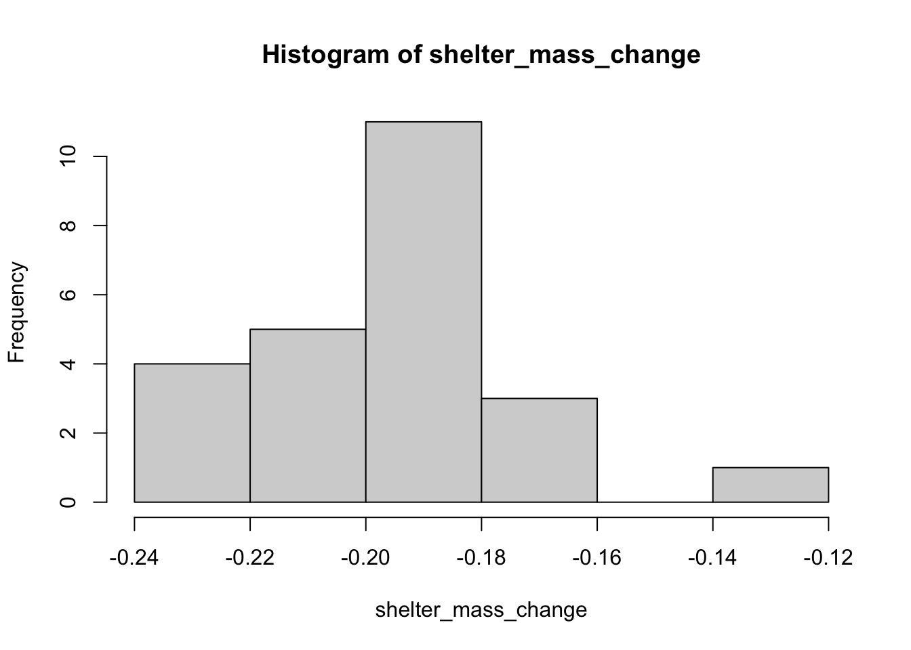
hist(no_shelter_mass_change)
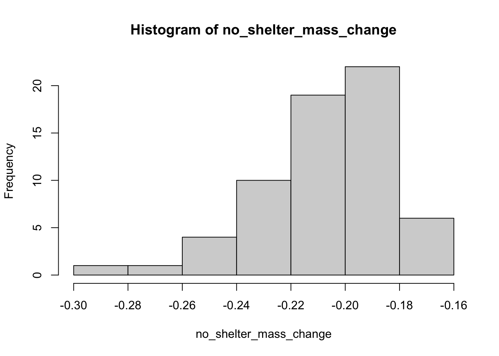
Now, we want to create a histogram in ggplot2. This is a powerful plotting function, which can be confusing but will create publication quality plots with the right commands. Several parts of the general function syntax are outlined below.
ggplot: the base function, in which you list the dataframe to be plotted. The input must be an object with class dataframe.
aes: subargument, where aesthetics are listed.
geom_histogram: create a histogram
xlab: x axis label
ylab: y axis label
ggtitle: main plot title
Themes can be used to change plot appearance and make it more readable.
theme_classic: nice plain plot with no background.
theme_minimal: clean background but with major grid lines shown.
First, we will create a basic histogram, and then we will make a “fancy” histogram.
`stat_bin()` using `bins = 30`. Pick better value with `binwidth`.
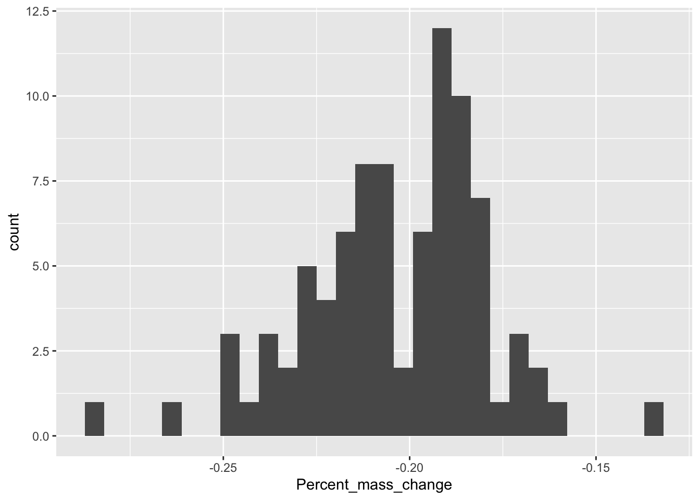
Above, we can see that this histogram is pretty similar to a regular histogram from the hist command. Now, let’s make it look nicer, and even parse out birds based on other variables. The point of each command is noted below. You may see an error about bin widths; this can be ignored.
# define dataset to plotggplot(bird_data,# described aesthetics; thing to plotaes(x = Percent_mass_change,# thing to group by# for stratified studiesfill = Shelter_added)) +# create a histogram# alpha sets transparency levelgeom_histogram(alpha =0.6, # identity prevents "stacking" of barsposition ="identity") +# change x labelxlab("Percent mass change") +# change y labelylab("Number of individuals") +# change legend labellabs(fill ="Shelter added") +# set minimal themetheme_minimal()
`stat_bin()` using `bins = 30`. Pick better value with `binwidth`.
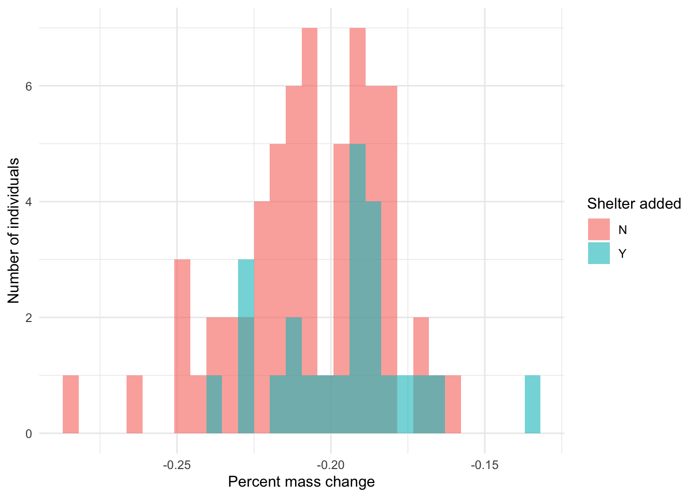
We can also do a density histogram by changing geom_histogram to geom_density. A density histogram is smoothed and shows the percent of individuals in each category.
ggplot(bird_data,aes(x = Percent_mass_change,fill = Shelter_added)) +### Change to density ###geom_density(alpha =0.6, position ="identity") +### Change to percent from count ###xlab("Percent mass change") +ylab("Percent of individuals") +labs(fill ="Shelter added") +theme_minimal()
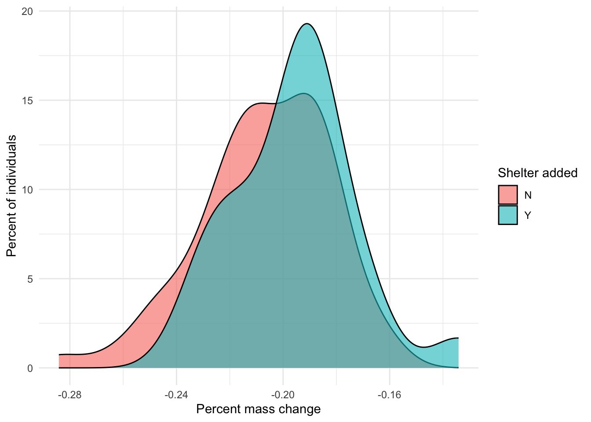
Above, we saw an error related to “bin count”. We can set bin count manually by using the argument bins in geom_histogram. Below is an example that is the same as shown previously but with bins = 6.
# define dataset to plotggplot(bird_data,# described aesthetics; thing to plotaes(x = Percent_mass_change,# thing to group by# for stratified studiesfill = Shelter_added)) +# create a histogram# alpha sets transparency levelgeom_histogram(alpha =0.6, # identity prevents "stacking" of barsposition ="identity",# set bin numberbins =6) +# change x labelxlab("Percent mass change") +# change y labelylab("Number of individuals") +# change legend labellabs(fill ="Shelter added") +# set minimal themetheme_minimal()
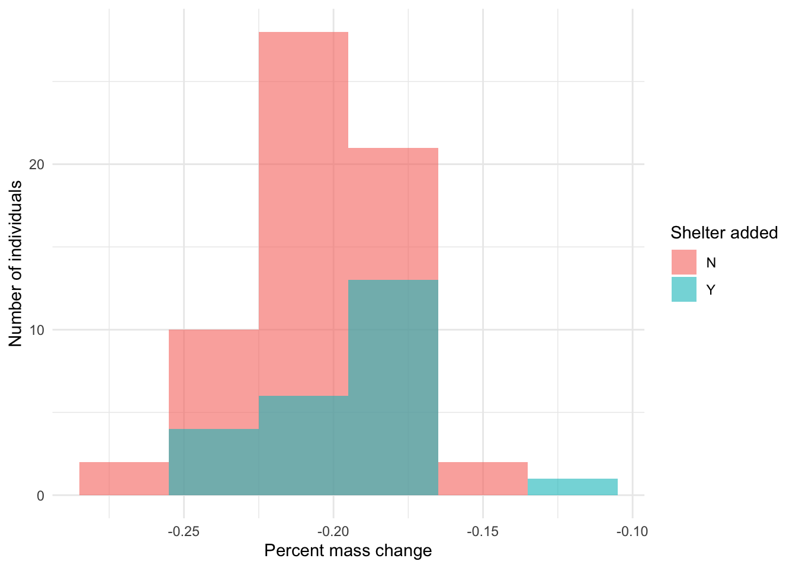
Section E. Create a boxplot using ggplot2
Create a boxplot for the column Percent_mass_change from the bird_data dataset. The syntax for this is:
### THIS CODE WILL NOT RUN #### Example of set upggplot(dataframe, # x is grouping variable; like condition# X is not needed, can be blankaes(x = x.variable,# variable to "boxplot"y = y.variable)) +geom_boxplot()
If you enter your correctly, you should get an output like this:
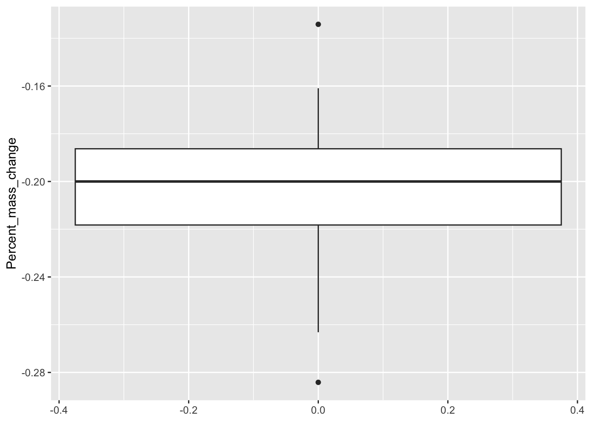
If you add a grouping variable, like x = Shelter_added to the aes argument, you will get something like this:
ggplot(bird_data, aes(x = Shelter_added, y = Percent_mass_change)) +geom_boxplot()
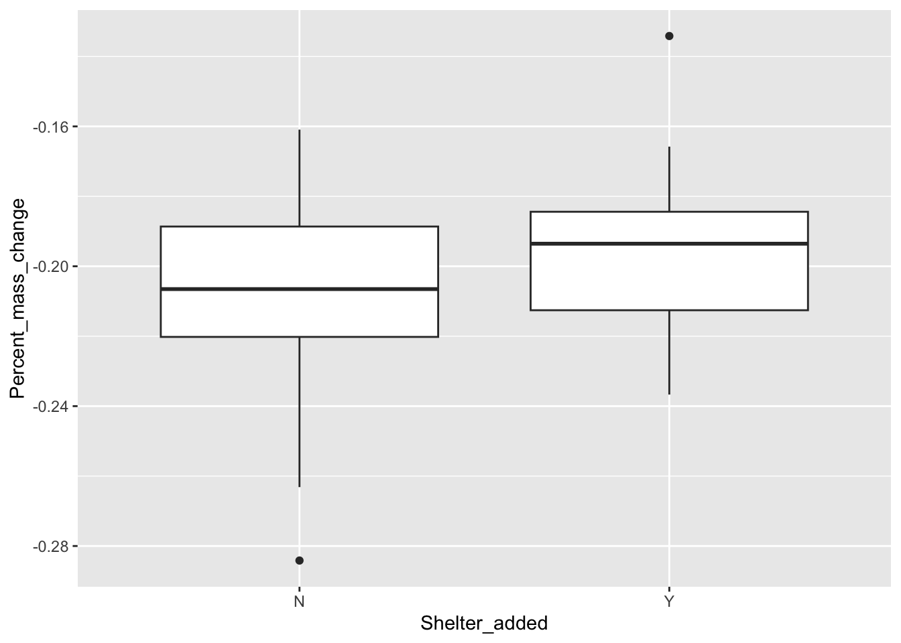
Like we did before, try changing the names of the axes, and try adding the command fill = Shelter_added to see what happens. Remember, you can also add things like theme_minimal() to make the plot “tidier”. See previous plots for formatting. Here is an example with axes renamed and fill added.
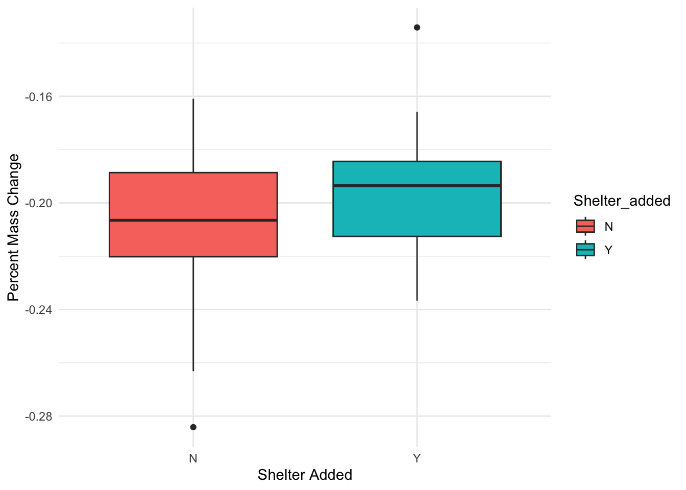
Section F. Create a bar chart using ggplot2
Next, we are going to create a bar chart for the Percent_mass_change data. This is fundamentally similar to the above plots, but instead of geom_boxplot or any other argument, we will do the following:
geom_bar(stat = "summary", fun = "mean")
You should get a plot that looks like the following:
For this scatterplot, we are going to compare Mass_Initial to Mass_Recapture. We will use Mass_Initial as our independent variable (x), and Mass_Recapture as our dependent variable (y).
For this plot, we are using geom_point, which calls a scatterplot of points.
For this one, we are also going to show how sections of this plot can be saved as objects.
Try these two combinations to see how you can add things in piecemeal:
a1 + a2
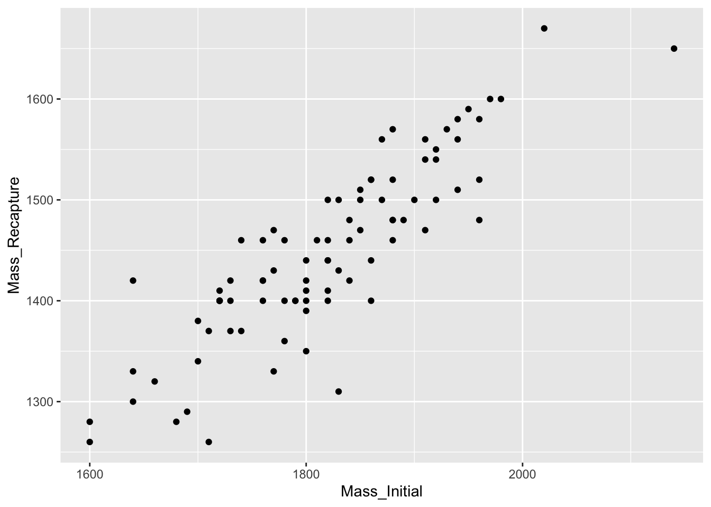
a1 + a2 + a3
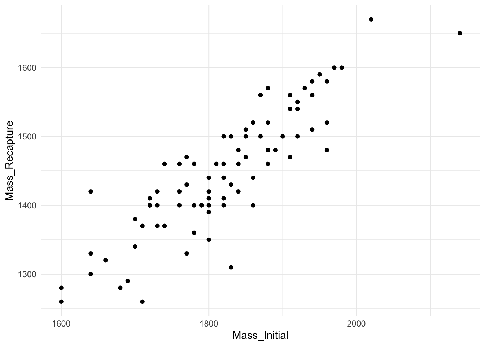
We can also split this up by color as well. All we have to do is change the a1 object above to include colour, which is similar to fill but better suited for this plot.
Next, we will create a line graph. This is essentially the same as the previous steps, except we will be using the argument geom_line to create our plot.
Notice that this is a fairly messy plot, but it still works and does a good job of illustrating how these things relate. We can still change the axes labels with commands like xlab and ylab.
Problem Set 3
The following questions pertain to the tree_data object.
HINT: There are only two “species” of tree - pine and spruce.
REMEMBER - answers should be rounded to the nearest tenth (0.1) as this is the precision of the available data.
Example table for organizing results.
Measurement
pine
spruce
Mean
Standard Deviation
Median
Interquartile Range
(2 points) Use package ggplot2 to create one boxplot with Annual_Mean_Volume_Growth on the y-axis and each Tree_Species on the x-axis. Be sure axes are clearly labeled and include units of measure if applicable. You will be asked to insert or copy-paste image files or screenshots of your histograms in Canvas.
(2 points) Use package ggplot2 to create one bar chart with Annual_Mean_Volume_Growth on the y-axis and each Tree_Species on the x-axis. Be sure axes are clearly labeled and include units of measure if applicable. You will be asked to insert or copy-paste image files or screenshots of your histograms in Canvas.
(2 points) Use the tree_data dataset and package ggplot2 to create a scatterplot with Nitrogen_Dose on the x-axis and Annual_Mean_Volume_Growth max on the y-axis. Be sure axes are clearly labeled and include units of measure if applicable. You will be asked to insert or copy- paste image files or screenshots of your histograms in Canvas.
(2 points) Use package ggplot2 to create a line graph with Nitrogen_Dose max on the x-axis and Annual_Mean_Volume_Growth on the y-axis. There should be one line for each Tree_Species and lines should be different colors. Be sure axes are clearly labeled and include units of measure if applicable. You will be asked to insert or copy-paste image files or screenshots of your histograms in Canvas.
(BONUS +1 point possible) Putting together what you learned, create a scatterplot from the tree_data dataset in which Nitrogen_Dose is on the x-axis, Annual_Mean_Volume_growth is on the y-axis, and points are grouped and colored by Tree_Species. What do you notice about the graph?
(BONUS +1 point possible) In the code used for the previous question, add the command geom_smooth(method = 'lm'). Rerun the ggplot() function. What do you notice about how the graph changed?
(BONUS +1 point possible) Recreate the bar chart from the previous problem set question. Run the code again, but first add position = "dodge" to the geom_bar() function. Be sure to use a comma to separate it from other attributes. Be sure axes are clearly labeled and include units of measure if applicable. You will be asked to insert or copy-paste image files or screenshots in Canvas. How did the graph change this time?
For the possibility of partial credit, compile your work in a single document and upload it in Canvas.
Submitting your work for the Module 3 Problem Set Assignment:
You do not need to answer any questions included in the procedures sections, those are for your self-reflection only. Questions in Canvas may be worded slightly differently than here, usually for brevity, but with the same meaning. If there is a discrepancy in what is being asked between this document and the question form in Canvas, answer based on what is asked in this document. Also, please let me know as soon as possible so I can get it fixed. Submit your work on or before the due date indicated on the assignment page.